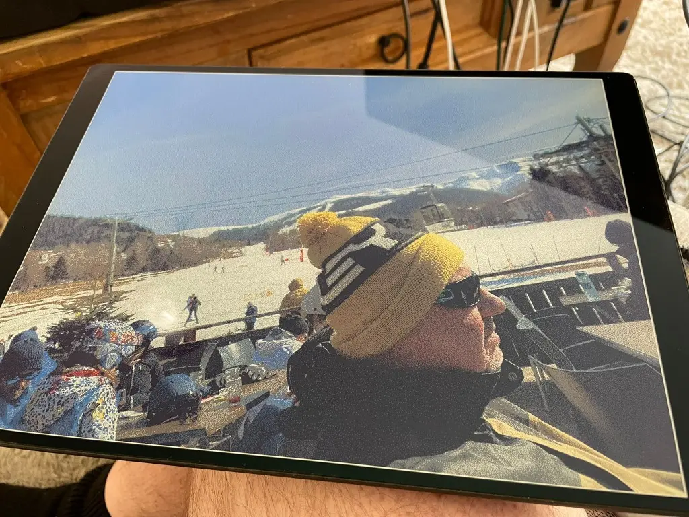

Insights · 21st September 2025
A colour e-ink platform, and a better way to bring it up.
The product is an i.MX93 colour e-ink platform designed to sleep for most of its life. The process story is how a distributed team brought its display support up without continually shipping hardware around.

I had not been this excited about computing since discovering Fractal Programming in C in my teens. There were two reasons: one product-related and one process-related.
The product
We had created an NXP i.MX93-based board to control a new generation of colour e-ink display. The images were crisp and, because e-ink retains the picture without continuous power, the complete system could shut down after an update and leave the content in place.
The intended operating pattern was deliberately quiet: sleep for most of the day, wake over Wi-Fi or cellular to check for new content, update when needed, then shut back down. Our engineering target, after power optimisation, was five years from the internal battery.
That changes where a connected display can go. Installation no longer starts with routing mains power or accepting frequent battery visits. The same platform thinking extends from smaller displays into much larger signage formats.
Lifecycle support belongs in the first design
A long battery target is not enough if the software cannot be maintained for the life of the product. The platform was built around a board-specific Yocto Linux path with secure boot and secure over-the-air delivery through Foundries.io, using the security capabilities of the i.MX93.
The aim is a credible route through UK RED security requirements and the Cyber Resilience Act: not a one-off prototype image, but a product that can receive controlled fixes after installation.
The old bring-up problem
Distributed hardware and software teams normally reach a difficult point after the first power-rail and console checks. A board has to move between people. If a hardware question appears during driver work it may have to move back again. Each round trip interrupts the work and reduces the number of useful test cycles.
What we changed
- The hardware team completed smoke testing and brought up enough connectivity for controlled remote access.
- We created a lightweight cross-compilation workflow for the user-space display support, avoiding a complete Yocto rebuild for every test.
- Each candidate binary could be transferred to the board over SSH, run against the real display and checked through its logs.
- The agent could make a focused change, build it, deploy it and return the evidence from the live hardware for review.
That did not remove engineering judgement. It shortened the mechanical loop around it. The useful distinction is between delegating a repeatable build-deploy-observe cycle and delegating the decision about whether the hardware is behaving correctly.
Why the process matters as much as the panel
The display made the result visible, but the reusable asset was the workflow. Once a board can be reached safely, built for quickly and observed properly, hardware and software teams can work together without treating geography as a serial dependency.
That is the route from an impressive display demo to a maintained connected product: power architecture, board software, secure delivery and the development loop designed as one system.